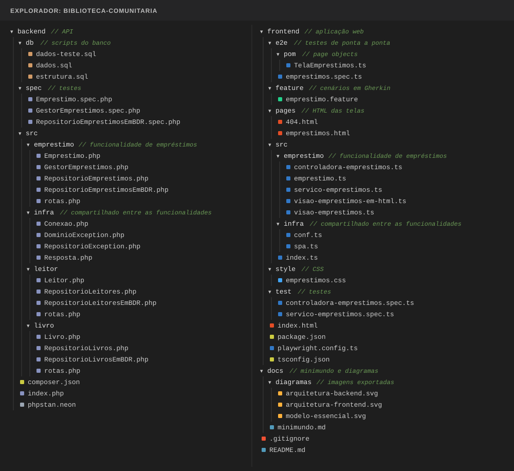

Etapa 3
Pastas do projeto
Como organizar as pastas, criá-las pelo terminal e decidir o que entra no repositório.
3.1 A organização completa
É assim que o projeto aparece no explorador do editor quando está pronto. Todos os arquivos desta imagem estão na coluna da esquerda, em Estrutura do projeto, com o código completo.

3.2 Por que separar assim
backendefrontendsão projetos independentes: cada um tem suas dependências, seus comandos e seus testes, e é executado em um terminal próprio.- Uma pasta por funcionalidade (
emprestimo,livro,leitor): tudo o que muda junto fica junto. Para mexer em empréstimos, basta abrir uma pasta. infraguarda o que é compartilhado por várias funcionalidades, como a conexão com o banco e as exceções.- Os testes ficam separados do código, em uma pasta própria, para não irem junto com a aplicação.
docsguarda o minimundo e os diagramas, que evoluem junto com o código.
| Pasta | O que guarda | Exemplos |
|---|---|---|
backend/src/emprestimo | Entidade, gestor, repositórios e rotas de uma funcionalidade | Emprestimo, GestorEmprestimos |
backend/src/infra | Código usado por várias funcionalidades | conexão, exceções, resposta |
backend/spec ou backend/test | Testes do back-end | testes da entidade, do gestor e do repositório |
backend/db | Scripts SQL do banco | estrutura.sql, dados.sql |
frontend/src/emprestimo | Visão, controladora e serviço da tela | ControladoraEmprestimos |
frontend/pages e frontend/style | HTML das telas e CSS | emprestimos.html |
frontend/test | Testes unitários do front-end | testes da controladora e do serviço |
frontend/e2e e frontend/feature | Testes de ponta a ponta e seus cenários | emprestimos.spec, emprestimo.feature |
docs | Minimundo e diagramas | minimundo.md, modelo-essencial.svg |
O nome da pasta de testes depende da ferramenta: o Kahlan procura spec; o Vitest encontra os arquivos .spec em qualquer pasta, e o
projeto usa test. No Java, o Maven exige src/main/java para o código, src/test/java para os testes e
src/main/resources para os arquivos que não são código, como os scripts SQL.
3.3 Criar as pastas pelo terminal
Dentro da pasta do projeto clonado na Etapa 1, crie primeiro as pastas comuns a qualquer linguagem. Também é possível criá-las pelo editor; o terminal é mais rápido quando são muitas.
Em seguida, as pastas do back-end. Elas mudam conforme a linguagem escolhida no topo da página.
O Git não guarda pastas vazias
Depois de criar as pastas, git status não mostra nada de novo: o Git só acompanha arquivos. As pastas passam a aparecer
no GitHub quando tiverem pelo menos um arquivo, o que acontece nas próximas etapas.
3.4 O que vai e o que não vai para o repositório
Vai para o repositório
- Todo o código-fonte e os testes
- Os scripts SQL e a pasta
docs composer.json,package.jsonoupom.xml: a lista de dependênciascomposer.lockepnpm-lock.yaml: as versões exatas instaladas, para todos usarem as mesmas- Arquivos de configuração, como
tsconfig.jsonephpstan.neon README.mde.gitignore
Não vai para o repositório
node_modulesevendor: recriados compnpm installecomposer installtargetedist: gerados pela compilação e pelo buildtest-results,playwright-reportecoverage: gerados pelos testes- Senhas, chaves de acesso e arquivos
.envcom dados sensíveis
O .gitignore na raiz do projeto impede que esses arquivos sejam adicionados por engano:
3.5 O README.md
O README.md é a primeira coisa que aparece na página do repositório no GitHub. Ele deve permitir que qualquer pessoa
coloque o projeto para funcionar sem perguntar nada a ninguém:
- Integrantes do grupo.
- Requisitos: o que precisa estar instalado.
- Como executar: os comandos, na ordem, e em qual pasta cada um é digitado.
- Testes: como rodar cada tipo de teste.
- Referências: de onde vieram bibliotecas, estilos e imagens.
O README abaixo muda com o back-end escolhido, porque os comandos são diferentes: